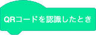

QRコードを使って、文字や数字などを読み取らせることができます。
パソコン上では動作しないので、必ず実機にプログラムを送って実行してください。
また、QRコードが小さすぎると認識できないことがあるので、10cm×10cm以上の大きさのものを用意してください。
QRコードはこちらで作成することができます。
データの中身は半角英数字にしてください。
QRコードのブロック
ブロックタブの左下の「拡張機能」の中から「QRコード」を選ぶことで、QRコードのブロックを使うことができます。
QRコードを認識したときブロックです。
QRコードを認識したときに実行する動作を設定するときに使います。
QRコード認識を開始ブロックです。
QRコード認識の開始、終了を設定します。
認識したQRコード内容ブロックです。
認識したQRコード内容を返します。
QRコードを読み取らせよう
QRコードを読み取らせます。
こちらでQRコードを作成し、内容をしゃべらせます。
3日目の「無限ループ」を使用します。
次のプログラムを作ろう。
QRコードの内容によって動作を変えよう
QRコードを合言葉のように使ったプログラムを作ります。
4日目の「条件分岐」を使います。
「password」と他にもう１つ、合計２つのQRコードを作成してください。
次に、以下のプログラムを作り、実機で実行させてみよう。